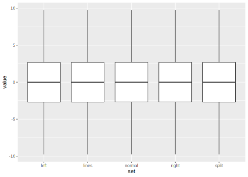

Day 3 Tidy Data, Visualization and Distributions
We will be using functions and data from the
tidyverse today, so lets load it.
It is good practice to have all library loading
and data import steps at the beginning of your
document.
library(tidyverse)## ── Attaching packages ────────## ✓ ggplot2 3.3.2 ✓ purrr 0.3.4
## ✓ tibble 3.0.3 ✓ dplyr 1.0.1
## ✓ tidyr 1.1.1 ✓ stringr 1.4.0
## ✓ readr 1.3.1 ✓ forcats 0.5.0## ── Conflicts ─────────────────
## x dplyr::filter() masks stats::filter()
## x dplyr::lag() masks stats::lag()3.1 Recap of day 2
3.1.1 Questions
- What is the
tidyverse? - What are the most important
dplyrverbs and their function? - Transfer: What do the following lines do?
starwars %>%
group_by(homeworld) %>%
mutate(mass = mass / max(mass, na.rm = TRUE)) %>%
filter(homeworld == "Tatooine")- What is a p-value?
- What is the difference between binomially and hypergeometrically distributed data?
3.1.2 Answers
3.1.2.1 dplyr
We use the starwars dataset to demonstrate the answers.
select to select columns!
select(starwars, name, height)filter to ask for specific rows based on a condition.
filter(starwars, mass > 100)mutate to add columns or modify existing columns.
mutate(starwars, NewHeight = height * 2)Renaming columns works with rename but also inside
of select.
starwars %>%
rename(character = name) %>%
select(biggness = mass, character, height) %>%
head(1)## # A tibble: 1 x 3
## biggness character height
## <dbl> <chr> <int>
## 1 77 Luke Skywalker 172arrange to sort based on a column.
starwars %>% arrange(mass)summarize to summarize columns down to
a single value per column (note, that the tidyverse accepts
American and British English, both functions exist).
starwars %>% summarize(max(height, na.rm = TRUE),
min(mass, na.rm = TRUE))## # A tibble: 1 x 2
## `max(height, na.rm = TRUE)` `min(mass, na.rm = TRUE)`
## <int> <dbl>
## 1 264 15It is best to give names to the arguments, so we write it as:
starwars %>% summarize(MaxHeight = max(height, na.rm = TRUE),
MinMass = min(mass, na.rm = TRUE))## # A tibble: 1 x 2
## MaxHeight MinMass
## <int> <dbl>
## 1 264 15group_by and summarise to summarise within
each group in the grouping column(s):
starwars %>%
group_by(homeworld) %>%
summarise(mass = mean(mass, na.rm = TRUE)) %>%
head(3)## `summarise()` ungrouping output (override with `.groups` argument)## # A tibble: 3 x 2
## homeworld mass
## <chr> <dbl>
## 1 Alderaan 64
## 2 Aleen Minor 15
## 3 Bespin 79Running the code in the first question thus demonstrates, how to normalize the mass to the maximum mass in each homeworld. For example, Luke Skywalker weights 56% as much as the heaviest person from his planet, while Darth Vader is the heaviest person on his planet (that made it into this dataset).
starwars %>%
filter(!is.na(mass)) %>%
group_by(homeworld) %>%
mutate(mass = mass / max(mass) ) %>%
select(name, height, mass, homeworld) %>%
head(4)## # A tibble: 4 x 4
## name height mass homeworld
## <chr> <int> <dbl> <chr>
## 1 Luke Skywalker 172 0.566 Tatooine
## 2 C-3PO 167 0.551 Tatooine
## 3 R2-D2 96 0.376 Naboo
## 4 Darth Vader 202 1 Tatooine3.1.2.2 Statistics
For the definition of p-values, check out chapter 2.6.2.
The hypergeometric distribution is for sampling without replacement.
x <- rhyper(10000, m = 50, n = 50, k = 80)
hist(x)
The binomial distribution is for sampling with replacement (Like tossing a coin to your witcher).
x <- rbinom(n = 10000, size = 10, prob = 0.5)
hist(x, breaks = 0:10)3.2 Visualization with ggplot2
3.2.1 The Grammar of Graphics
The idea of a “grammar of graphics” was first introduced by Leland Wilkinson (Wilkinson u. a. 2005). It enables us to describe graphics (data visualizations) in terms of relatively simple building blocks.
Hadley Wickham took this idea and translated it with slight modifications into an R package (Wickham 2010). Understanding the individual building blocks and their grammar (how they connect) allows us to create intricate visualizations that can be iterated on with great speed without learning a different set of rules for each type of visualization.
So, what makes up a graph?
starwars %>%
filter(mass < 500, !is.na(birth_year)) %>%
ggplot(aes(x = height,
y = mass,
color = gender)) +
geom_point(aes(size = birth_year))
The building ground for our visualization is data.
We then decide on some features in the data (like height,
mass, gender and birth year) and map them to an aesthetic property.
This is what happens inside the aes function as the
mapping argument to ggplot. Height for example is mapped
to the x-axis whereas gender is mapped to the color.
“The color of what?”, you might ask, and rightfully so.
There is no visualization without geometric objects
to represent those aesthetics. This is where the functions
starting with geom_ come into play. We add them
to our plot with the + operator. Here, we use geom_point()
to add points to our plot. This is a good fit
because one point can represent several dimensions
of our data at the same time (like, height as the x position,
mass as the y position etc.). Other pieces of the grammar
of graphics are not handled explicitly in the code above
because the defaults work just fine. But they are handled
nonetheless in the background: Scales define
how exactly the data is mapped to aesthetics and can be modified
with functions starting with scale_ (like
scale_color_... to change the colors used in the color
aesthetic, or scale_x_log10() to apply a logarithmic scale
to the x-axis). Lastly, the objects with their
scales need to placed on a coordinate system, like
the default cartesian coordinates in the above example.
Data => Aesthetic Mapping => Scales => (Statistical Transformation) => Geometric Objects => Coordinate System =>
Instead of displaying the plot straight away, we can save it to a variable:
plt1 <- starwars %>%
filter(mass < 500, !is.na(birth_year)) %>%
ggplot(aes(x = height,
y = mass,
color = gender,
label = name)) +
geom_point(aes(size = birth_year))And then display it later
plt1 # not runOr pass it to other functions,
like the handy ggplotly function
from the plotly package, that creates
and interactive java script visualization
from a normal ggplot object:
plotly::ggplotly(plt1)We can also use this object to pass it to the
ggsave function to, well…, save it to a file.
ggsave("myGGplot.png", plt2)A cool little R-package that comes with a RStudio addin
is the colourpicker. This makes it easier to
choose the colors for our plot.
plt1 +
scale_color_manual(values = c("#1f78b4", "#D10808", "#139E99", "#59807A"))starwars %>%
count(gender) %>%
ggplot(aes(gender, n, fill = gender)) +
geom_col()A shortcut for this is geom_bar() (it does the counting
for us, similar to geom_histogram()).
starwars %>%
ggplot(aes(gender, fill = gender)) +
geom_bar()We can also pass different data to individual
geometric layers e.g. to highlight certain
parts in our data. The other geoms inherit
the data passed into ggplot. The
same holds true for aesthetics. aes defined
in ggplot() are passed on to all geoms,
but individual geoms can have their
own aes, adding or overwriting the global aesthetics
of the whole plot.
justLuke <- starwars %>%
filter(name == "Luke Skywalker")
plt2 <- starwars %>%
filter(mass < 500, birth_year < 500) %>%
ggplot(aes(birth_year, mass)) +
geom_point() +
geom_line() +
labs(x = "birth year",
y = "mass [kg]",
title = "Awesome Plot 1",
caption = "Data from Starwars",
subtitle = "This is my subtitle",
tag = "A") +
geom_point(data = justLuke, color = "red") +
geom_text(data = justLuke, aes(label = name), vjust = 1, hjust = 0) +
theme_classic() +
theme(axis.title = element_text(face = "bold"))
plt2
While saving this plot, we can also decide on the dimensions (in inch), pixel density (dots per inch, dpi) and other properties of the plot:
ggsave(filename = "plots/myFirstGggplot.png", plt2,
width = 12,
height = 12)Inside of rmarkdown documents, this is handled
by the chunk options. E.g. {r, fig.width=5}
leads to a differently sized plot.
plt23.3 Visualization is Key
Because visualization is so important, we dive into one example here:
3.3.1 Anscombes Quartet
And a note on Tidy Data and the
tidyrpackage.
head(anscombe)## # A tibble: 6 x 8
## x1 x2 x3 x4 y1 y2 y3 y4
## <dbl> <dbl> <dbl> <dbl> <dbl> <dbl> <dbl> <dbl>
## 1 10 10 10 8 8.04 9.14 7.46 6.58
## 2 8 8 8 8 6.95 8.14 6.77 5.76
## 3 13 13 13 8 7.58 8.74 12.7 7.71
## 4 9 9 9 8 8.81 8.77 7.11 8.84
## 5 11 11 11 8 8.33 9.26 7.81 8.47
## 6 14 14 14 8 9.96 8.1 8.84 7.04Anscombes quartet is special because the datasets 1 to 4 look quite different but have the same x-mean, y-mean and simple linear regression (down to a couple of decimal digits)!
paste(
mean(anscombe$x1),
mean(anscombe$x2),
sd(anscombe$x1),
sd(anscombe$x2)
)## [1] "9 9 3.3166247903554 3.3166247903554"A cool trick from functional programming: Higher order functions. Higher order functions are functions that take other functions as arguments. They enable us to express ideas and instructions to the computer in a concise yet powerful manner.
E.g. the map-family. Map functions apply a function
to every element of a vector or list.
addOne <- function(x) x + 1
map(list(1,2,3), addOne)## [[1]]
## [1] 2
##
## [[2]]
## [1] 3
##
## [[3]]
## [1] 4For all the datatypes (e.g. integer or double)
there is a special version of map named map_<datatype>,
which will always return this type
and is thus safer to program with.
map(anscombe, mean)## $x1
## [1] 9
##
## $x2
## [1] 9
##
## $x3
## [1] 9
##
## $x4
## [1] 9
##
## $y1
## [1] 7.500909
##
## $y2
## [1] 7.500909
##
## $y3
## [1] 7.5
##
## $y4
## [1] 7.500909map_dbl(anscombe, mean)## x1 x2 x3 x4 y1 y2 y3 y4
## 9.000000 9.000000 9.000000 9.000000 7.500909 7.500909 7.500000 7.500909map_dbl(anscombe, sd)## x1 x2 x3 x4 y1 y2 y3 y4
## 3.316625 3.316625 3.316625 3.316625 2.031568 2.031657 2.030424 2.0305793.3.2 Excursion Tidy Data
Tidy Data means:
Every row is an observation, every column is a feature.

Figure 3.1: Following three rules makes a dataset tidy: variables are in columns, observations are in rows, and values are in cells. (Source: R4DS, Hadley Wickham)
But this is not always straightforward because…
“Happy families are all alike; every unhappy family is unhappy in its own way.” \(-\) Leo Tolstoy
Tidy datasets are all alike, but every messy dataset is messy in its own way." \(-\) Hadley Wickham
3.3.2.1 Anscombe
The anscombe dataset actually hides a feature
in its column names! The tidyr package helps us,
to extract it into it’s own column.
anscombe %>% head(3)## # A tibble: 3 x 8
## x1 x2 x3 x4 y1 y2 y3 y4
## <dbl> <dbl> <dbl> <dbl> <dbl> <dbl> <dbl> <dbl>
## 1 10 10 10 8 8.04 9.14 7.46 6.58
## 2 8 8 8 8 6.95 8.14 6.77 5.76
## 3 13 13 13 8 7.58 8.74 12.7 7.71The feature hidden in the column names is the dataset (1 to 4). Belonging to a dataset is actually a property of each value.
anscombe_long <- anscombe %>%
pivot_longer(everything(),
names_pattern = "(.)(.)",
names_to = c(".value", "set")
)Now, each row represents one point (one observational unit), while every column represents a property / feature of said points.
head(anscombe_long)## # A tibble: 6 x 3
## set x y
## <chr> <dbl> <dbl>
## 1 1 10 8.04
## 2 2 10 9.14
## 3 3 10 7.46
## 4 4 8 6.58
## 5 1 8 6.95
## 6 2 8 8.14Now our dataset plays better with the rest of the tidyverse, especially ggplot:
anscombe_long %>%
ggplot(aes(x, y)) +
geom_point() +
facet_wrap(~ set)
anscombe_long %>%
group_by(set) %>%
summarise(mean_x = mean(x),
mean_y = mean(y) )## `summarise()` ungrouping output (override with `.groups` argument)## # A tibble: 4 x 3
## set mean_x mean_y
## <chr> <dbl> <dbl>
## 1 1 9 7.50
## 2 2 9 7.50
## 3 3 9 7.5
## 4 4 9 7.50Or, to showcase a more functional style of programming:
anscombe_long %>%
group_by(set) %>%
summarise_at(vars(x,y), list(mean = mean, sd = sd)) %>%
mutate_at(vars(-set), round, 2)## # A tibble: 4 x 5
## set x_mean y_mean x_sd y_sd
## <chr> <dbl> <dbl> <dbl> <dbl>
## 1 1 9 7.5 3.32 2.03
## 2 2 9 7.5 3.32 2.03
## 3 3 9 7.5 3.32 2.03
## 4 4 9 7.5 3.32 2.033.3.2.2 Plate Reader Example

Figure 3.2: (Quelle: https://www.stellarscientific.com/accuris-smartreader-96-microplate-absorbance-plate-reader/
Sometimes, we end up with variable- / column-names that are not readily
allowed. “Forbidden” names only work when they are encompassed
by backticks (`). Thus, wrapping a variable name in backticks
allows us to even have spaces and symbols in the name.
But try to avoid this if possible! You will nevertheless
encounter forbidden variable names when you read in data from
a spreadsheet that has those names for its columns.
Use rename to assign a better name or install the
janitor package for the handy function janitor::clean_names().
rawData <- tibble(
`this is a "forbidden" name! #` = 1:5,
`column 2` = rep("hi", 5)
)
rawData## # A tibble: 5 x 2
## `this is a "forbidden" name! #` `column 2`
## <int> <chr>
## 1 1 hi
## 2 2 hi
## 3 3 hi
## 4 4 hi
## 5 5 hiTurns into
rawData %>% janitor::clean_names()## # A tibble: 5 x 2
## this_is_a_forbidden_name_number column_2
## <int> <chr>
## 1 1 hi
## 2 2 hi
## 3 3 hi
## 4 4 hi
## 5 5 hiReading in the example data from a plate reader, we end up with:
raw_atpase <- readxl::read_xlsx("data/04_ATPase_assay.xlsx", skip = 10) %>%
janitor::clean_names()
head(raw_atpase[,1:6])## # A tibble: 6 x 6
## content time_s sample_x1 sample_x2 sample_x3 sample_x4
## <chr> <dbl> <dbl> <dbl> <dbl> <dbl>
## 1 Raw Data (340) 0 0.737 1.33 1.71 1.81
## 2 Raw Data (340) 60 0.789 1.35 1.65 1.71
## 3 Raw Data (340) 120 0.656 1.29 1.66 1.70
## 4 Raw Data (340) 180 0.531 1.23 1.66 1.70
## 5 Raw Data (340) 240 0.49 1.18 1.67 1.72
## 6 Raw Data (340) 300 0.486 1.12 1.67 1.74Note that if you do not have the janitor package,
you can also use the .name_repair argument to
read_xlsx to repair the names while reading the data,
but the names produced in doing so are not as pretty.
readxl::read_xlsx("data/04_ATPase_assay.xlsx",
skip = 10,
.name_repair = "universal") %>%
head(1)## # A tibble: 1 x 14
## Content Time..s. Sample.X1 Sample.X2 Sample.X3 Sample.X4 Sample.X5 Sample.X6
## <chr> <dbl> <dbl> <dbl> <dbl> <dbl> <dbl> <dbl>
## 1 Raw Da… 0 0.737 1.33 1.71 1.81 1.01 1.44
## # … with 6 more variables: Sample.X7 <dbl>, Sample.X8 <dbl>, Sample.X9 <dbl>,
## # Sample.X10 <dbl>, Sample.X11 <dbl>, Sample.X12 <dbl>New names: *
Time [s]-> Time..s. * …
Clean the data, make it tidy
tidy_atpase <- raw_atpase %>%
select(-content) %>%
pivot_longer(
-time_s,
names_to = "sample",
values_to = "absorbance"
) %>%
rename(time = time_s)Visualize data
tidy_atpase %>%
ggplot(aes(time, absorbance, color = sample)) +
geom_line()Normalize data
normalized_atpase <- tidy_atpase %>%
group_by(sample) %>%
mutate(absorbance = absorbance / max(absorbance)) %>%
ungroup()
normalized_atpase %>%
ggplot(aes(time, absorbance, color = sample)) +
geom_point() +
geom_line()
3.3.3 Summary Statistics
3.3.3.1 Standard Deviation
\[sd = \sqrt{\frac{\sum_{i=0}^{n}{(x_i-\bar x)^2}}{(n-1)} }\]
Why n-1? The degrees of freedom are n reduced by 1 because if we know the mean of a sample, once we know all but 1 of the individual values, the last value is automatically known and thus doesn’t count towards the degrees of freedom.
3.3.3.2 Variance
The variance is the squared standard deviation.
\[var = \sigma^2\]
3.3.3.3 Standard Error of the Mean
Often called SEM or SE.
\[SEM=\sigma / \sqrt{n}\]
3.4 Distributions
x <- rnorm(1000)
SD <- sd(x)
hist(x, probability = TRUE)
curve(dnorm, add = TRUE, col = "red")
abline(v = SD, col = "red")
abline(v = -SD, col = "red")
SEM
sd(x) / sqrt(length(x))## [1] 0.030770733.4.1 From Distributions to Quantiles
d stands for density i.e. the probability density
function of a distribution.
curve(dnorm, -4, 4)Figure 3.3: Probability density function for the normal distribution.
p stands for probability. And it represents
the cumulative probability i.e. the integral
of the density function from \(-\infty\) to \(x\).
curve(pnorm, -4, 4)
Figure 3.4: pnorm of x is the probability to draw a value less than or equal than x from a normal distribution.
q stands for quantile. It is the inverse of
the probability density function (so the axis are swapped).
curve(qnorm)
Quantiles!
3.4.1.1 Quantile-Quantile Plots
Quantile-Quantile plots can answer the question
“Does my data follow a certain distribution?”
In this case: “Is my data normally distributed?”
qqnorm(x)
qqline(x, col = "red")
3.5 The Datasaurus Dozen
The Datasaurus Dozen is a great dataset, showcasing similar properties to anscombes quartet (but in a more impressive way).
datasauRus::datasaurus_dozen %>%
ggplot(aes(x,y)) +
geom_point(size = 0.9) +
facet_wrap(~dataset) +
coord_equal() +
theme_classic()You can find the research paper here (matejka2017a?).
But not only does it highlight the importance of not relying solely on summary statistics, it also comes with additional datasets.
One of them is designed to show the potential problems of so called box-plots:
dinos <- datasauRus::box_plots
head(dinos)## # A tibble: 6 x 5
## left lines normal right split
## <dbl> <dbl> <dbl> <dbl> <dbl>
## 1 -9.77 -9.77 -9.76 -9.76 -9.77
## 2 -9.76 -9.74 -9.72 -9.05 -9.77
## 3 -9.75 -9.77 -9.68 -8.51 -9.77
## 4 -9.77 -9.77 -9.64 -8.24 -9.77
## 5 -9.76 -9.77 -9.6 -8.82 -9.77
## 6 -9.77 -9.76 -9.56 -8.07 -9.76This data is not in the tidy format but this can easily be fixed:
tidy_dinos <- dinos %>%
pivot_longer(everything(), names_to = "set", values_to = "value")
head(tidy_dinos)## # A tibble: 6 x 2
## set value
## <chr> <dbl>
## 1 left -9.77
## 2 lines -9.77
## 3 normal -9.76
## 4 right -9.76
## 5 split -9.77
## 6 left -9.76Boxplots!
tidy_dinos %>%
ggplot(aes(set, value)) +
geom_boxplot()
A Boxplot shows the median (50th percentile) as a black
line, the 25th and 75th percentile (= first and third quartile)
as lower and upper limits of the box,
as well as whiskers.
The upper whisker extends from the hinge to the largest value no further than 1.5 * IQR from the hinge (where IQR is the inter-quartile range, or distance between the first and third quartiles). […]
Data beyond the end of the whiskers are called “outlying” points
and are plotted individually (from ?geom_boxplot).
However, this type of plot ignores the underlying distribution of datapoints. And if we look at the actual points, the full range of what the boxplot didn’t tell us can be seen:
tidy_dinos %>%
ggplot(aes(set, value)) +
geom_boxplot() +
geom_jitter(alpha = 0.1)
tidy_dinos %>%
group_by(dataset = set) %>%
summarise(Median = median(value) %>% round(2))## `summarise()` ungrouping output (override with `.groups` argument)## # A tibble: 5 x 2
## dataset Median
## <chr> <dbl>
## 1 left -0.01
## 2 lines -0.01
## 3 normal 0
## 4 right 0
## 5 split 0Plotting the points individually with geom_point
doesn’t quite work here because they overlap too much.
geom_jitter helps us out by distributing the points
an the x-axis. We are allowed to move the points
on the x-axis a bit because it is a categorical
axis, not a continuous. Shifting the points
within their categories does not change the data.
We could not have moved the points on the y-axis
because that would have falsified the data.
tidy_dinos %>%
ggplot(aes(set, value)) +
geom_point(alpha = 0.01)
tidy_dinos %>%
ggplot(aes(set, value)) +
geom_jitter()
An even more problematic visualization would have been to display the data with a barplot of means and error bars for the SD or SEM. Friends don’t let friends make barplots!
Histograms or density plots on the other hand tell us about the distribution, not just summary statistics, while at the same time not overloading the plot like the points do in some cases.
tidy_dinos %>%
ggplot(aes(value, fill = set)) +
geom_histogram(bins = 50) +
facet_wrap(~ set)
tidy_dinos %>%
ggplot(aes(value, fill = set)) +
geom_density() +
facet_wrap(~ set)
The ggbeeswarm-package gives us even more
possibilities to display all those points
in an orderly fashion.
tidy_dinos %>%
ggplot(aes(set, value, fill = set)) +
ggbeeswarm::geom_quasirandom(method = "smiley")3.6 Exercises
3.6.1 Inclusion Bodies
You can get the dataset from my Github Repository.
Disclaimer: This is real biological data but the explanation and context are changed.
- If you want to impress me, do all the exercises
in an Rmarkdown document, add your conclusions and thoughts
along with the data analysis process and structure it
with meaningful headlines using
#. - Read the csv-file
data/03_inclusion_bodies.csv. - Make it tidy
- Visualize the data with ggplot as:
- Jittered point plot
- Boxplot
- Two overlaid histograms
(Hint: use
position = "identity"so that R doesn’t stack the bars) - Two overlaid density plots
(Hint: use the parameter
alphato make both of them visible at the same time) - A Barplot with the mean and error bars, hints:
- Create a summary tibble first
- Use
geom_col, notgeom_bar
- BONUS: Make the plots pretty with ggplot theme options
3.6.2 Solutions
From the last course: